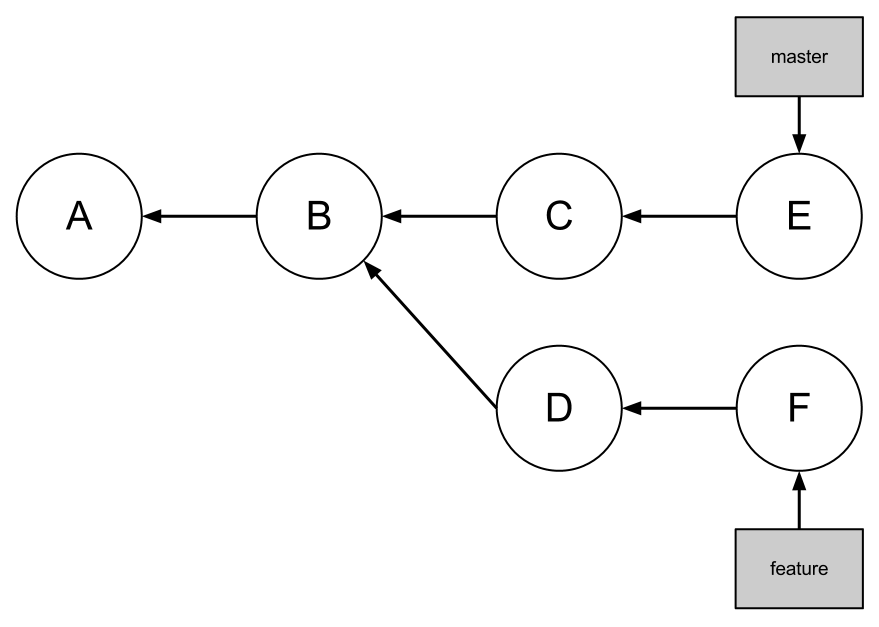

Code Foo
Code Foo
Using Git
Here At IGN
What is Git?
You should already have some idea, since you
used Git to apply for Code Foo.
Git is a distributed revision control and source code management system ...
Distributed means you ask people to pull your changes instead of pushing your changes to a central repository.
... with features like cheap local branching, convenient staging areas, and multiple workflows
And it's fast, too.
Get Git
Follow this handy tutorial at GitHub.
Most of us actually install Git with Homebrew, which we also use to install other stuff like memcache.
Skip the "GitHub for Mac" GUI; if you want a GUI,
try GitX instead.
Terminology
- Repository
- Fork
- Remote
- Index
- Commit
- Branch
Repository
The complete collection of a project's files
and the history of those files.
Repositories are mirrored to GitHub
and shared with all collaborators.
 ►
►
 ►
►

Fork
If you don't have write access to a repository, you can make your own copy of it and commit to the copy.
You can publish your fork. You can also ask the original repository's owner to pull your changes.
GitHub makes this process very, very easy.

Remote
A copy of a repository, typically
hosted someplace like GitHub.
When you clone a repository, the source repository is automatically added as a remote called origin.
You can push changes from your local repository to origin (or any other remotes you configure).
►
You can also pull changes from origin
into your local repository.
►
Your local repository remembers the state of each remote. This state is updated every time you do
a git fetch. (git pull uses git fetch)
 ◄►
◄►
Index
A staging area for changes.
The index stores the state of all files in the repository.
The index does not automatically reflect the files
in your working directory!
Changes must be
explictly added to the index.
Commit
A change to a repository, including all of the
metadata associated with that change.
Metadata includes the author, the date, a short log message, and the state of all files in the repository.
The first commit in a repository has no parents.
Most commits have one parent, but some commits
can have more than one parent.
Branch
A line of development; a series of commits.
Each commit already knows its parent, so a branch only needs to reference the last commit in the branch.
Branches allow development to occur in parallel.

Branches are usually merged with other branches to reunite separate development efforts.
Heads Up
reveal.js is an easy to use, HTML based, presentation tool. You'll need a modern browser with support for CSS 3D transforms to see it in its full glory.
Vertical Slides
Slides can be nested inside of other slides,
try pressing down.
Basement Level 1
Press down or up to navigate.
Basement Level 2
Cornify

Basement Level 3
That's it, time to go back up.
Holistic Overview
Press ESC to enter the slide overview!
Works in Mobile Safari
Try it out! You can swipe through the slides pinch your way to the overview.
Transition Styles
You can select from different transitions, like:
Marvelous Unordered List
- No order here
- Or here
- Or here
- Or here
Fantastic Ordered List
- One is smaller than...
- Two is smaller than...
- Three!
Global State
Set data-state="something" on a slide and "something"
will be added as a class to the document element when the slide is open. This let's you
apply broader style changes, like switching the background.
"blackout"
"soothe"
Custom Events
Additionally custom events can be triggered on a per slide basis by binding to the data-state name.
Reveal.addEventListener( 'customevent', function() {
alert( '"customevent" has fired' );
} );
Clever Quotes
These guys come in two forms, inline:
The nice thing about standards is that there are so many to choose from
and block:
For years there has been a theory that millions of monkeys typing at random on millions of typewriters would reproduce the entire works of Shakespeare. The Internet has proven this theory to be untrue.
Pretty Code
var supports3DTransforms = document.body.style['webkitPerspective'] !== undefined ||
document.body.style['MozPerspective'] !== undefined ||
document.body.style['perspective'] !== undefined;
function linkify( selector ) {
if( supports3DTransforms ) {
var nodes = document.querySelectorAll( selector );
for( var i = 0, len = nodes.length; i < len; i++ ) {
var node = nodes[i];
if( !node.className || !node.className.match( /roll/g ) ) {
node.className += ' roll';
node.innerHTML = '' + node.innerHTML + '';
}
};
}
}
linkify( 'a' );
Courtesy of highlight.js.
Intergalactic Interconnections
You can link between slides internally,
like this.
Fragmented Views
Hit the next arrow...
... to step through ...
any type- of view
- fragments
Spectacular image!